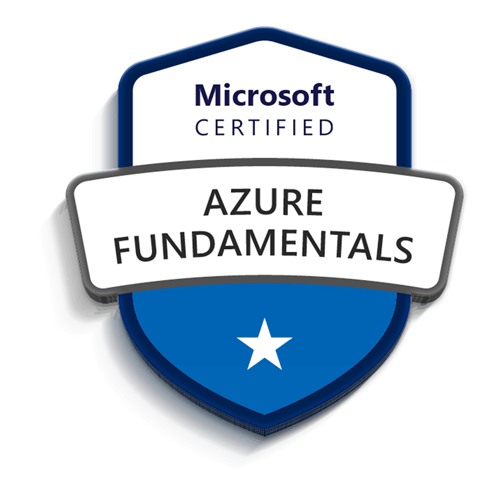

Informazioni
- Data di nascita
- 10/11/1993
- Residenza
- Albignasego, PD
- Lingue
- Italiano, Inglese
- Patente
- B
Esperienza Lavorativa
-
- WEGG s.r.l.
- Full Stack Developer
- 2018-Corrente
-
Sviluppatore software con responsabilità di progettazione, sviluppo e manutenzione di
applicazioni web proprietarie. Preso parte, come lead developer, alla realizzazione di diversi
progetti software; dall'ideazione e individuazione delle tecnologie da utilizzare,
all'implementazione delle diverse componenti sia frontend che backend. Tra i diversi progetti,
quelli principali sono: SaaS: EloquySPLA (SaaS per il monitoraggio di licenze Miscrosoft SPLA) e
Trine Software (SaaS per la gestione di progetti, budget e risorse aziendali). Tecnologie e
strumenti maggiormente utilizzati: Java EE/Spring Boot, HTML5,
CSS3/SCSS, Angular 2+, REST API, C# (console application),
MySQL/SQL Server.
-
- Wintech S.p.A.
- Full Stack Developer
- 2017
-
Sviluppo applicazioni Web per progetti interni con tecnologia Angular 2+ e Java/Spring Boot.
-
- Sopra Steria Group
- Mobile Developer
- 2016-2017
-
Sviluppo di applicazioni mobile ibride tramite l'utilizzo del framework opensource
Apache Cordova. Realizzazione di
single-page application mediante HTML5/CSS3 e framework
Backbone.js.
Formazione
-
- Laurea triennale in Informatica
- Università degli studi di Padova
- 2012-2016
- Voto: 88/110
-
Principali materie di studio: Programmazione, Sistemi e Reti, Sviluppo Web e Ingegneria del
Software. Realizzazione di diversi progetti software didattici. In particolare, progettazione e
sviluppo in team di un'applicazione sperimentale per dispositivi mobile con Android nativo in
grado di utilizzare le informazioni provenienti da dispositivi Beacon BLE 4.0.
-
- Diploma di Perito Industriale
- I.T.I.S. F. Severi, Padova
- 2007-2012
- Voto: 80/100
-
Specializzazione in Informatica. Fondamenti di programmazione imperativa e ad oggetti, nozioni
fondamentali di sistemistica e base di dati.
Competenze
-
Principi SW
Ottima conoscenza dei principi fondamentali di programmazione (
S.O.L.I.D.,
KISS,
Design patterns
), buona esperienza nella loro applicazione per la realizzazione di codice più manutenibile.
-
Sviluppo Web
Conoscenza approfondita delle tecnologie fondamentali (HTML, CSS e Javascript). Esperienza con gli
standard HTML5, CSS3 e framework Javascript Angular2+ e Typescript.
-
Java
Ottima conoscenza del linguaggio. Esperienza approfondita delle sue meccaniche. Ottima conoscenza
del framework Spring Boot e delle librerie correlate (Jackson,
Hibernate).
-
REST
Ottima conoscenza di questa architettura software per la comunicazione fra sistemi e applicazioni
distribuiti. Buona esperienza nel realizzare prodotti che tendano ad applicare i concetti RESTful.
-
C#
Buona conoscenza del linguaggio, soprattutto per lo sviluppo di applicazioni desktop. Conoscenza
base del framework
ASP.NET.
-
Database
Buona conoscenza dei RDBMS MySQL e SQL Server. Conoscenza base dei linguaggi NoSQL e in particolare
della libreria MongoDB.
-
Git
Ottima conoscenza della tecnologia e utilizzo abituale dello strumento per il versionamento del
codice.
-
Microsoft Azure
Discreta esperienza nell'uso della piattaforma. Integrazione con la piattaforma
Microsoft DevOps
per realizzare CI/CD.
-
Mobile
Discreta esperienza nella realizzazione di applicazioni ibride. Conoscenza base in ambito mobile
nativo: Android e Swift.
-
Altro
Discreta conoscenza del linguaggio PHP e della liberia NodeJs. Poca esperienza con il linguaggio
C++.
Certificazioni
-
- Microsoft Certified: Azure Fundamentals
-

- Luglio 2019